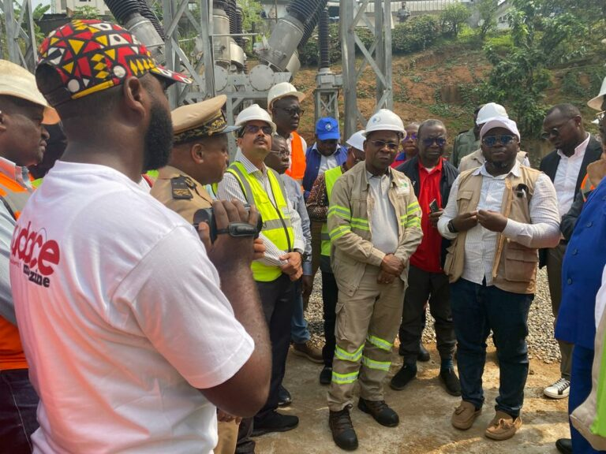

Recherche
Économie
Électricité au Cameroun : l’heure des résultats a sonné
Le ministre de l’Eau et de l’Énergie a fixé un cap décisif à Douala pour redresser SOCADEL et relever le défi du secteur électrique camerounais.

Économie
Cameroun-Tchad : un méga-projet électrique de 557 milliards FCFA pour électrifier l’Afrique centrale
Le Cameroun lance deux appels d’offres géants pour exporter 100 MW d’électricité vers le Tchad et renforcer son réseau national.

Économie
Cameroun / Énergie : Paul Biya signe la fin d’ENEO et donne naissance à la SOCADEL
… la nouvelle société reprend la distribution de l’électricité sur l’ensemble du territoire…
Société
Délestages, renationalisation d’ENEO et pari du Compact énergétique : le Cameroun rebranche l’avenir
… les coupures d’électricité pèsent sur les ménages comme sur les entreprises…
Le magazine · N°005
Électricité : Eneo passe sous pavillon national
Au sommaire du N°005, Présidentielle 2025 : le chrono est lancé.